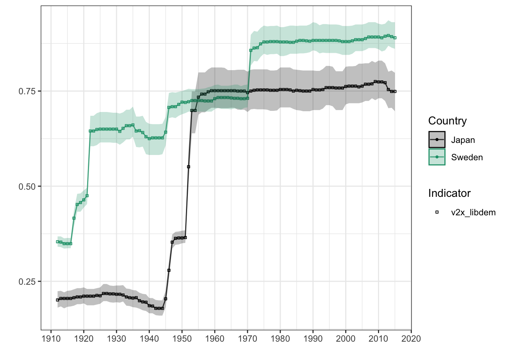

3 民主主義・国家データ
中国をはじめとする新興経済の台頭とともに国家（政府）の役割がふたたび注目されつつあります. 他方で権威主義的な国家の台頭は民主主義の優位性が失われつつある、という論調もみられるようになりました1.こうした問題を考える上でも「国家」や「民主主義」を測る指標が必要となります.そこで本項ではそうしたデータを提供するデータベースをいくつか紹介します.
3.1 「民主主義」を測る- vdemdata
スウェーデンのイェーテボリ大学政治学科のV-Dem研究所のVarieties of Democracy(V-Dem)データベースは大規模な社会科学データベースです。データセットの最新バージョンv10は1789年から2019年までの202カ国をカバーしています。本データベースはその名が示すとおり、民主主義をめぐるデータセットを提供しています。アンケート調査にもとづいたミクロデータが基礎となっていますが、それらのデータから作成されたマクロデータが提供されています。
データはcsv, Stata,Spssの３つの形式で提供されています。また、本研究所じしんがデータセットRパッケージvdemdataを公開しています。これは最新のV-Dem (Varieties of Democracy) とV-partyのデータパッケージです。くわえて検索、グラフ作成機能も提供しています.
3.1.1 vdemdataパッケージのインストール
Rパッケージvdemdataパッケージは開発版であるため,vdemdataは同研究所のGithubサイトからインストールする必要があります。このため、最初に、devtoolsをインストールします。
次に、devtoolsを使ってvdemdataパッケージをインストールします。コンソール画面に次のように入力し、エンターキーを押してください。
インストールを終えたら、library()で読み込ます。これでvdemdataパッケージが利用できます。
本パッケージが提供する基本的な関数は以下のとおりです.使い方については後で説明します.
- vdem:データセットを読み込みます.
- vparty: V-Partyデータセットを読み込みます.
- var_info :コードブックで指定された特定の変数の基本情報をコンソールに表示します.
- find_var:キーワードで変数を検索します.
- fill_vars: 特定の選挙の変数をしまします.
グラフ作成機能も提供されています.
- plot_indicator: V-Dem指標のグラフを描きます.
3.1.2 vdemdataパッケージの利用法
3.1.2.1 データを読み込む - vdem
V-Demデータセットの読み込むためにはvdem関数を使います.ここでは読み込んだデータセットをv_dataという名前をつけたオブジェクトに容れます.
str()関数を使ってデータ構造をみるとV-Demデータセットは非常に大きく、27,192の観察値、4,176の変数を持つことがわかります.ここからデータを探すことは大変です.最初に, vdemdataのcodebookを利用した方法を紹介しましょう.
## 'data.frame': 27555 obs. of 4602 variables:
## $ country_name : chr "Mexico" "Mexico" "Mexico" "Mexico" ...
## $ country_text_id : chr "MEX" "MEX" "MEX" "MEX" ...
## $ country_id : num 3 3 3 3 3 3 3 3 3 3 ...
## $ year : num 1789 1790 1791 1792 1793 ...
## $ historical_date : Date, format: "1789-12-31" "1790-12-31" ...
## $ project : num 1 1 1 1 1 1 1 1 1 1 ...
## $ historical : num 1 1 1 1 1 1 1 1 1 1 ...
## $ histname : chr "Viceroyalty of New Spain" "Viceroyalty of New Spain" "Viceroyalty of New Spain" "Viceroyalty of New Spain" ...
## $ codingstart : num 1789 1789 1789 1789 1789 ...
## $ codingend : num 2022 2022 2022 2022 2022 ...
## $ codingstart_contemp : num 1900 1900 1900 1900 1900 1900 1900 1900 1900 1900 ...
## $ codingend_contemp : num 2022 2022 2022 2022 2022 ...
## $ codingstart_hist : num 1789 1789 1789 1789 1789 ...
## $ codingend_hist : num 1920 1920 1920 1920 1920 1920 1920 1920 1920 1920 ...
## $ gapstart1 : num NA NA NA NA NA NA NA NA NA NA ...
## $ gapstart2 : num NA NA NA NA NA NA NA NA NA NA ...
## $ gapstart3 : num NA NA NA NA NA NA NA NA NA NA ...
## $ gapend1 : num NA NA NA NA NA NA NA NA NA NA ...
## $ gapend2 : num NA NA NA NA NA NA NA NA NA NA ...
## $ gapend3 : num NA NA NA NA NA NA NA NA NA NA ...
## $ gap_index : num 1 1 1 1 1 1 1 1 1 1 ...
## $ COWcode : num 70 70 70 70 70 70 70 70 70 70 ...
## $ v2x_polyarchy : num 0.028 0.028 0.028 0.028 0.028 0.028 0.028 0.028 0.028 0.028 ...
## $ v2x_polyarchy_codelow : num 0.016 0.016 0.016 0.016 0.016 0.016 0.016 0.016 0.016 0.016 ...
## $ v2x_polyarchy_codehigh : num 0.036 0.036 0.036 0.036 0.036 0.036 0.036 0.036 0.036 0.036 ...
## $ v2x_polyarchy_sd : num 0.011 0.011 0.011 0.011 0.011 0.011 0.011 0.011 0.011 0.011 ...
## $ v2x_libdem : num 0.042 0.042 0.042 0.042 0.042 0.042 0.042 0.042 0.042 0.042 ...
## $ v2x_libdem_codelow : num 0.026 0.026 0.026 0.026 0.026 0.026 0.026 0.026 0.026 0.026 ...
## $ v2x_libdem_codehigh : num 0.055 0.055 0.055 0.055 0.055 0.055 0.055 0.055 0.055 0.055 ...
## $ v2x_libdem_sd : num 0.014 0.014 0.014 0.014 0.014 0.014 0.014 0.014 0.014 0.014 ...
## $ v2x_partipdem : num 0.006 0.006 0.006 0.006 0.006 0.006 0.006 0.006 0.006 0.006 ...
## $ v2x_partipdem_codelow : num 0.001 0.001 0.001 0.001 0.001 0.001 0.001 0.001 0.001 0.001 ...
## $ v2x_partipdem_codehigh : num 0.01 0.01 0.01 0.01 0.01 0.01 0.01 0.01 0.01 0.01 ...
## $ v2x_partipdem_sd : num 0.007 0.007 0.007 0.007 0.007 0.007 0.007 0.007 0.007 0.007 ...
## $ v2x_delibdem : num NA NA NA NA NA NA NA NA NA NA ...
## $ v2x_delibdem_codelow : num NA NA NA NA NA NA NA NA NA NA ...
## $ v2x_delibdem_codehigh : num NA NA NA NA NA NA NA NA NA NA ...
## $ v2x_delibdem_sd : num NA NA NA NA NA NA NA NA NA NA ...
## $ v2x_egaldem : num NA NA NA NA NA NA NA NA NA NA ...
## $ v2x_egaldem_codelow : num NA NA NA NA NA NA NA NA NA NA ...
## $ v2x_egaldem_codehigh : num NA NA NA NA NA NA NA NA NA NA ...
## $ v2x_egaldem_sd : num NA NA NA NA NA NA NA NA NA NA ...
## $ v2x_api : num 0.056 0.056 0.056 0.056 0.056 0.056 0.056 0.056 0.056 0.056 ...
## $ v2x_api_codelow : num 0.032 0.032 0.032 0.032 0.032 0.032 0.032 0.032 0.032 0.032 ...
## $ v2x_api_codehigh : num 0.072 0.072 0.072 0.072 0.072 0.072 0.072 0.072 0.072 0.072 ...
## $ v2x_api_sd : num 0.022 0.022 0.022 0.022 0.022 0.022 0.022 0.022 0.022 0.022 ...
## $ v2x_mpi : num 0 0 0 0 0 0 0 0 0 0 ...
## $ v2x_mpi_codelow : num 0 0 0 0 0 0 0 0 0 0 ...
## $ v2x_mpi_codehigh : num 0 0 0 0 0 0 0 0 0 0 ...
## $ v2x_mpi_sd : num 0 0 0 0 0 0 0 0 0 0 ...
## $ v2x_freexp_altinf : num 0.173 0.173 0.173 0.173 0.173 0.173 0.173 0.173 0.173 0.173 ...
## $ v2x_freexp_altinf_codelow : num 0.112 0.112 0.112 0.112 0.112 0.112 0.112 0.112 0.112 0.112 ...
## $ v2x_freexp_altinf_codehigh : num 0.273 0.273 0.273 0.273 0.273 0.273 0.273 0.273 0.273 0.273 ...
## $ v2x_freexp_altinf_sd : num 0.621 0.621 0.621 0.621 0.621 0.621 0.621 0.621 0.621 0.621 ...
## $ v2x_frassoc_thick : num 0.04 0.04 0.04 0.04 0.04 0.04 0.04 0.04 0.04 0.04 ...
## $ v2x_frassoc_thick_codelow : num 0.018 0.018 0.018 0.018 0.018 0.018 0.018 0.018 0.018 0.018 ...
## $ v2x_frassoc_thick_codehigh : num 0.074 0.074 0.074 0.074 0.074 0.074 0.074 0.074 0.074 0.074 ...
## $ v2x_frassoc_thick_sd : num 0.633 0.633 0.633 0.633 0.633 0.633 0.633 0.633 0.633 0.633 ...
## $ v2x_suffr : num 0 0 0 0 0 0 0 0 0 0 ...
## $ v2xel_frefair : num 0 0 0 0 0 0 0 0 0 0 ...
## $ v2xel_frefair_codelow : num 0 0 0 0 0 0 0 0 0 0 ...
## $ v2xel_frefair_codehigh : num 0 0 0 0 0 0 0 0 0 0 ...
## $ v2xel_frefair_sd : num 0 0 0 0 0 0 0 0 0 0 ...
## $ v2x_elecoff : num 0 0 0 0 0 0 0 0 0 0 ...
## $ v2x_liberal : num 0.162 0.162 0.162 0.162 0.162 0.162 0.162 0.162 0.162 0.162 ...
## $ v2x_liberal_codelow : num 0.103 0.103 0.103 0.103 0.103 0.103 0.103 0.103 0.103 0.103 ...
## $ v2x_liberal_codehigh : num 0.216 0.216 0.216 0.216 0.216 0.216 0.216 0.216 0.216 0.216 ...
## $ v2x_liberal_sd : num 0.056 0.056 0.056 0.056 0.056 0.056 0.056 0.056 0.056 0.056 ...
## $ v2xcl_rol : num 0.188 0.188 0.188 0.188 0.188 0.188 0.188 0.188 0.188 0.188 ...
## $ v2xcl_rol_codelow : num 0.111 0.111 0.111 0.111 0.111 0.111 0.111 0.111 0.111 0.111 ...
## $ v2xcl_rol_codehigh : num 0.27 0.27 0.27 0.27 0.27 0.27 0.27 0.27 0.27 0.27 ...
## $ v2xcl_rol_sd : num 0.619 0.619 0.619 0.619 0.619 0.619 0.619 0.619 0.619 0.619 ...
## $ v2x_jucon : num 0.291 0.291 0.291 0.291 0.291 0.291 0.291 0.291 0.291 0.291 ...
## $ v2x_jucon_codelow : num 0.154 0.154 0.154 0.154 0.154 0.154 0.154 0.154 0.154 0.154 ...
## $ v2x_jucon_codehigh : num 0.457 0.457 0.457 0.457 0.457 0.457 0.457 0.457 0.457 0.457 ...
## $ v2x_jucon_sd : num 0.675 0.675 0.675 0.675 0.675 0.675 0.675 0.675 0.675 0.675 ...
## $ v2xlg_legcon : num 0.114 0.114 0.114 0.114 0.114 0.114 0.114 0.114 0.114 0.114 ...
## $ v2xlg_legcon_codelow : num 0.042 0.042 0.042 0.042 0.042 0.042 0.042 0.042 0.042 0.042 ...
## $ v2xlg_legcon_codehigh : num 0.277 0.277 0.277 0.277 0.277 0.277 0.277 0.277 0.277 0.277 ...
## $ v2xlg_legcon_sd : num 0.72 0.72 0.72 0.72 0.72 0.72 0.72 0.72 0.72 0.72 ...
## $ v2x_partip : num 0.022 0.022 0.022 0.022 0.022 0.022 0.022 0.022 0.022 0.022 ...
## $ v2x_partip_codelow : num 0.001 0.001 0.001 0.001 0.001 0.001 0.001 0.001 0.001 0.001 ...
## $ v2x_partip_codehigh : num 0.034 0.034 0.034 0.034 0.034 0.034 0.034 0.034 0.034 0.034 ...
## $ v2x_partip_sd : num 0.027 0.027 0.027 0.027 0.027 0.027 0.027 0.027 0.027 0.027 ...
## $ v2x_cspart : num 0.036 0.036 0.036 0.036 0.036 0.036 0.036 0.036 0.036 0.036 ...
## $ v2x_cspart_codelow : num 0.009 0.009 0.009 0.009 0.009 0.009 0.009 0.009 0.009 0.009 ...
## $ v2x_cspart_codehigh : num 0.106 0.106 0.106 0.106 0.106 0.106 0.106 0.106 0.106 0.106 ...
## $ v2x_cspart_sd : num 0.72 0.72 0.72 0.72 0.72 0.72 0.72 0.72 0.72 0.72 ...
## $ v2xdd_dd : num NA NA NA NA NA NA NA NA NA NA ...
## $ v2xel_locelec : num 0 0 0 0 0 0 0 0 0 0 ...
## $ v2xel_locelec_codelow : num 0 0 0 0 0 0 0 0 0 0 ...
## $ v2xel_locelec_codehigh : num 0 0 0 0 0 0 0 0 0 0 ...
## $ v2xel_locelec_sd : num 0 0 0 0 0 0 0 0 0 0 ...
## $ v2xel_regelec : num 0.012 0.012 0.012 0.012 0.012 0.012 0.012 0.012 0.012 0.012 ...
## $ v2xel_regelec_codelow : num 0 0 0 0 0 0 0 0 0 0 ...
## $ v2xel_regelec_codehigh : num 0.03 0.03 0.03 0.03 0.03 0.03 0.03 0.03 0.03 0.03 ...
## $ v2xel_regelec_sd : num 0.047 0.047 0.047 0.047 0.047 0.047 0.047 0.047 0.047 0.047 ...
## $ v2xdl_delib : num NA NA NA NA NA NA NA NA NA NA ...
## $ v2xdl_delib_codelow : num NA NA NA NA NA NA NA NA NA NA ...
## [list output truncated]データフレームv_dataは4,176の変数を有します.str(v_data)の表示から理解されるように、ほとんどの変数名がV-Dem特有の変数名です。たとえばv2x_polyarchyという変数がありますが、これが何を表現しているかは分かりません。そうした情報はcodebookから得られます.
Vdemdataには、変数の情報を提供する簡易版codebookがついています。codebookじたい1,017の観察値、17の変数から構成されるデータフレームです。View()関数を使ってデータフレームcodebookの変数名を一覧表示してみてください.
データフレームcodebookの変数tagの中にv2x_polyarchyがあります。これに対応する変数nameを見ると、Electoral democracy indexと記載されています.さらに変数quesitonをみると”To what extent is the ideal of electoral democracy in its fullest sense achieved?“という質問に対する回答をベースにしていることも分かります。
このように変数の意味を理解するためには、vdemdata付属のcodebookでも十分ですが、pdf版のフルバージョンもあります.
また変数の情報はvar_info()関数を使っても得ることができます.
“変数タグtag名”にはV-demデータセットの変数名もしくはcodebookのtag名を入力します.この例ではv2x_polyarchyです.
## $question_id
## [1] 730
##
## $question_number
## [1] 1
##
## $metasection
## [1] "D"
##
## $name
## [1] "Electoral democracy index"
##
## $vartype
## [1] "D"
##
## $cb_section
## [1] "x1"
##
## $tag
## [1] "v2x_polyarchy"
##
## $projectmanager
## [1] "Jan Teorell"
##
## $question
## [1] "To what extent is the ideal of electoral democracy in its fullest sense achieved?"
##
## $clarification
## [1] "The electoral principle of democracy seeks to embody the core value of making rulers responsive to citizens, achieved through electoral competition for the electorate's approval under circumstances when suffrage is extensive; political and civil society organizations can operate freely; elections are clean and not marred by fraud or systematic irregularities; and elections affect the composition of the chief executive of the country. In between elections, there is freedom of expression and an independent media capable of presenting alternative views on matters of political relevance. In the V-Dem conceptual scheme, electoral democracy is understood as an essential element of any other conception of representative democracy --- liberal, participatory, deliberative, egalitarian, or some other."
##
## $responses
## [1] NA
##
## $ordering
## [1] NA
##
## $scale
## [1] "Interval, from low to high (0-1)."
##
## $answertype
## [1] NA
##
## $sources
## [1] "v2x\\_freexp\\_altinf v2x\\_frassoc\\_thick v2x\\_suffr v2xel\\_frefair v2x\\_elecoff"
##
## $notes
## [1] NA
##
## $datarelease
## [1] "1-13. Release 1-5 used a different, preliminary aggregation formula."
##
## $citation
## [1] "Teorell \\textit{et al.} (2019); \\textit{V-Dem Codebook} (see suggested citation at the top of this document)."
##
## $coverage
## [1] NA
##
## $subsetof
## [1] NA
##
## $crosscoder_aggregation
## [1] NA
##
## $aggregation
## [1] "The index is formed by taking the average of, on the one hand, the weighted average of the indices measuring freedom of association thick (v2x_frassoc_thick), clean elections (v2xel_frefair), freedom of expression (v2x_freexp_altinf), elected officials (v2x_elecoff), and suffrage (v2x_suffr) and, on the other, the five-way multiplicative interaction between those indices. This is half way between a straight average and strict multiplication, meaning the average of the two. It is thus a compromise between the two most well known aggregation formulas in the literature, both allowing partial \"compensation\" in one sub-component for lack of polyarchy in the others, but also punishing countries not strong in one sub-component according to the \"weakest link\" argument. The aggregation is done at the level of Dahl's sub-components with the one exception of the non-electoral component. The index is aggregated using this formula: \\begin{equation*}\n\\begin{aligned}\n\\textit{v2x_polyarchy} = {} & .5 * \\textit{MPI} + .5 * \\textit{API} \\\\\n& = .5 * (\\textit{v2x_elecoff} * \\textit{v2xel_frefair} * \\textit{v2x_frassoc_thick} * \\\\\n& \\textit{v2x_suffr} * \\textit{v2x_freexp_altinf}) \\\\\n& + .5 * ((1/8) * \\textit{v2x_elecoff} + (1/4) * \\textit{v2xel_frefair} \\\\\n& + (1/4) * \\textit{v2x_frassoc_thick} + (1/8) * \\textit{v2x_suffr} \\\\\n& + (1/4) * \\textit{v2x_freexp_altinf})\n\\end{aligned}\n\\end{equation*}"
##
## $ccp_tag
## [1] NA
##
## $clean_tag
## [1] "v2x_polyarchy"
##
## $survey_id
## [1] NA
##
## $vignettes_used
## [1] FALSE
##
## $old_tag
## [1] NA
##
## $compiler
## [1] NA
##
## $clarification_historical
## [1] NA
##
## $codebook_id
## [1] 262
##
## $conthistmerge
## [1] NA
##
## $histmerged
## [1] FALSE
##
## $years
## [1] "1789-2022"
##
## $hist_outside_coding
## [1] FALSE
##
## $additional_versions
## [1] "*_codelow, *_codehigh, *_sd"
##
## $cleaning
## [1] NA
##
## $date_specific
## [1] NA
##
## $available_versions
## [1] NA
##
## $cont_outside_coding
## [1] FALSE
##
## $overlap_use_hist
## [1] FALSE
##
## $is_party
## [1] FALSE
##
## $cb_section_type
## [1] "subsubsection"
##
## $defaultdate
## [1] NA
##
## $convergence
## [1] NA
##
## $cy_aggregation
## [1] NA
##
## $no_update
## [1] FALSE3.1.2.2 データを探す - find_var()
codebookをベースにデータを探す方法の他に、find_var()関数を利用した検索方法もあります.むしろ,この方法の方が便利です.find_()の使い方は次のようになります.
たとえば「市民社会」“civil society”をキーワードにデータを探してみましょう.
## 'data.frame': 7 obs. of 46 variables:
## $ question_id : int 3156 3008 3140 344 818 1382 760
## $ question_number : int NA NA NA NA 13 NA NA
## $ metasection : chr "E" "E" "E" "Intro and Comments" ...
## $ name : chr "Civil society participation index ordinal" "Women civil society participation index ordinal" "Core civil society index ordinal" "Civil society comments" ...
## $ vartype : chr "D" "D" "D" "C" ...
## $ cb_section : chr "e1" "e1" "e1" "commentsContemporary" ...
## $ tag : chr "e_v2x_cspart_3C, _4C, _5C" "e_v2x_gencs_3C, _4C, _5C" "e_v2xcs_ccsi_3C, _4C, _5C" "v2cscommnt" ...
## $ projectmanager : chr NA NA NA "Michael Bernhard, Michael Coppedge" ...
## $ question : chr "Are major CSOs routinely consulted by policymaker; how large is the involvement of people in CSOs; are women pr"| __truncated__ "Do women have the ability to express themselves and to form and participate in groups?" "How robust is civil society?" "Add here any comments you have about any of the previous questions on civil society. NOTE: Please do not includ"| __truncated__ ...
## $ clarification : chr "These are ordinalized versions of the V-Dem civil society participation index. The original index ranges from 0"| __truncated__ "These are ordinalized versions of the V-Dem women civil society participation index. The original index ranges "| __truncated__ "These are ordinalized versions of the V-Dem core civil society index. The original index ranges from 0 to 1. Th"| __truncated__ NA ...
## $ responses : chr NA NA NA "Text." ...
## $ ordering : chr NA NA NA NA ...
## $ scale : chr "Ordinal." "Ordinal." "Ordinal." NA ...
## $ answertype : chr NA NA NA NA ...
## $ sources : chr "v2pscnslnl v2cscnsult v2csprtcpt v2csgender" "v2cldiscw v2csgender v2mefemjrn" "v2cseeorgs v2csreprss v2csprtcpt" NA ...
## $ notes : chr NA NA NA NA ...
## $ datarelease : chr "5-13." "5-13." "5-13." "8-13. Available upon request, subject to review and approval." ...
## $ citation : chr "Lindberg (2016)." "Lindberg (2016)." "Lindberg (2016)." "Bernhard textit{et al}. (2017); \\textit{V-Dem Codebook} (see suggested citation at the top of this document)." ...
## $ coverage : chr NA NA NA NA ...
## $ subsetof : chr NA NA NA NA ...
## $ crosscoder_aggregation : chr NA NA NA NA ...
## $ aggregation : chr "Same transformation rule as for \"v2x\\_libdem\\_3C/\\_4C/\\_5C\"." "Same transformation rule as for \"v2x\\_libdem\\_3C/\\_4C/\\_5C\"." "Same transformation rule as for \"v2x\\_libdem\\_3C/\\_4C/\\_5C\"." NA ...
## $ ccp_tag : chr NA NA NA NA ...
## $ clean_tag : chr "e_v2x_cspart_3c /_4c /_5c" "e_v2x_gencs_3c /_4c /_5c" "e_v2xcs_ccsi_3c /_4c /_5c" "v2cscommnt" ...
## $ survey_id : int NA NA NA 2058 NA NA NA
## $ vignettes_used : logi FALSE FALSE FALSE FALSE FALSE FALSE ...
## $ old_tag : chr NA NA NA NA ...
## $ compiler : chr NA NA NA NA ...
## $ clarification_historical: chr NA NA NA NA ...
## $ codebook_id : int 1031 833 1019 1187 740 943 817
## $ conthistmerge : chr NA NA NA NA ...
## $ histmerged : logi FALSE FALSE FALSE FALSE FALSE FALSE ...
## $ years : chr "1789-2022" "1789-2022" "1789-2022" NA ...
## $ hist_outside_coding : logi FALSE FALSE FALSE FALSE FALSE FALSE ...
## $ additional_versions : chr NA NA NA NA ...
## $ cleaning : chr NA NA NA NA ...
## $ date_specific : chr NA NA NA NA ...
## $ available_versions : chr "*_3C, *_4C, *_5C" "*_3C, *_4C, *_5C" "*_3C, *_4C, *_5C" NA ...
## $ cont_outside_coding : logi FALSE FALSE FALSE FALSE FALSE FALSE ...
## $ overlap_use_hist : logi FALSE FALSE FALSE FALSE FALSE FALSE ...
## $ is_party : logi FALSE FALSE FALSE FALSE FALSE FALSE ...
## $ cb_section_type : chr "subsubsection" "subsubsection" "subsubsection" "subsubsection" ...
## $ defaultdate : chr NA NA NA NA ...
## $ convergence : chr NA NA NA NA ...
## $ cy_aggregation : chr NA NA NA NA ...
## $ no_update : logi FALSE FALSE FALSE FALSE FALSE FALSE ...ここでは”civil society”をキーワードに検索した結果をパイプ(%>%)でstr()関数に渡しています. 結果をみると、17行×17変数のデータフレームが得られます.1列めの変数が$name、2列目の変数が$vartype,３列目の変数が $tagと続きます.
少し見づらいのでView()関数を使い、同じ内容を表示させてみます.
name変数をみると、7行目に“Core civil society index”というデータがあることが分かります。じっさいにデータをダウンロードするためには変数tagの値が必要となります. この変数に対応するtag名はv2xcs_ccsi です. また変数questionをみると、このデータが“How robust is civil society?”に対する回答にもとづいていることが分かります。さらに変数scaleからは0から1の値を取る間隔データでることも分かります。
それではこのCore civil society indexデータを取得してみましょう。じっさいにはvdemによってすでにV-demのデータセットをダウンロードしています。したがってこのデータセットを格納したデータフレームv_dataからCore civil society indexデータを抽出することになります. Core civil society index はv_dataではtag名すなわちv2xcs_ccsiで表現されています。そこで実際の作業としてはこの変数列を抽出することになります。変数列を選択し、抽出するためにはselect()関数を利用します. あわせて国名country_name、国コードcountry_text_id、年yearといった一連の変数も選択・抽出します.
これでV-demの提供する市民社会指標core civil society indexが取得できました.つぎに市民社会指標の推移をグラフに描いてみましょう.
3.1.2.3 民主主義データの可視化
市民社会
さらにcountry_name変数を利用し、日本とスウェーデンだけを取り出してみましょう. このためにfilter()関数を利用します.
civil_society <- v_data %>%
select("v2xcs_ccsi", "country_name", "country_text_id", "year") %>%
filter(country_name == c("Japan","Sweden"))## Warning: There was 1 warning in `filter()`.
## ℹ In argument: `country_name == c("Japan", "Sweden")`.
## Caused by warning in `country_name == c("Japan", "Sweden")`:
## ! longer object length is not a multiple of shorter object length結果をhead() 関数で表示します.
## v2xcs_ccsi country_name country_text_id year
## 1 0.045 Sweden SWE 1789
## 2 0.045 Sweden SWE 1791
## 3 0.045 Sweden SWE 1793
## 4 0.045 Sweden SWE 1795
## 5 0.045 Sweden SWE 1797
## 6 0.045 Sweden SWE 1799ggplot2を利用し、日本とスウェーデンの市民社会指標Core civil society indexの推移を比較してみましょう。
ggplot(data = civil_society, mapping = aes(x = year,y = v2xcs_ccsi,group = country_name))+
geom_line(mapping = aes(color = country_name))+
labs(
subtitle = "Core civil society index",
x = NULL,
y = NULL
)+
theme_minimal()
容易に想像がつくことですが、明治維新から第２次以前の期間においてはスウェーデンと日本は大きく異なっています.第２次世界大戦後にようやくスウェーデンに近づいていきます.
リベラル・デモクラシー
同じグラフはvdemdataパッケージのplot_indicator()関数でも描くことができます.plot_indicator()関数の基本的な使い方は次のようになります.
plot_indicator(
indicator = "",
countries = NULL,
min_year = min(vdemdata::vdem$year),
max_year = max(vdemdata::vdem$year),
uncertainty = TRUE
)plot_indicator()がとる５つの引数を説明しておきましょう.
- indicator = ““:”“にV-Demデータセットのtag名（文字列ベクトル）を入力します.tag名についてはcodebookを参照してください.
- countries= プロットされる国名（文字列ベクトル）を指定します. ただし、国名はV-Demデータの
country_name列の国だけが指定可能です. NULLの場合、グローバルな平均がプロットされます。 - min_year = プロットする期間の開始年(数値)を指定します. なお、min(vdemdata::vdem$year)は、min()関数を使ってvdemデータセットの年の最小値を返すよう指示することになります。
- max_year = プロットする期間の最終年(数値)を指定します.
- uncertainty = TRUEもしくはFALSEの論理値をとり、TRUEを指定したとき、利用可能な場合には信頼区間がポイント推定値に追加されます.
plot_indictor()によるグラフ作成ではリベラル・デモクラシー指標v2x_libdemを利用します.
plot_indicator(indicator= "v2x_libdem", countries = c("Japan", "Sweden"),min_year = 1912, max_year = 2015)
スェーデンと比較すると、第２次世界大戦以前の日本がいかにリベラル・デモクラシーからかけ離れていたか、また、1945年に劇的に政治体制が変化したか、ということを理解できます.
3.2 「政府の質」を測る - rgog
2004年にBo Rothstein教授とSören Holmberg教授によって設立されたQuality of Government(QoG)研究所は優れた政府Good Governanceと政府の質Quality of Governanceの原因、結果、性質に関するデータを提供しています.
QoG研究所が提供するデータセットは次の5つです.
- QoG基本データ(Basic Data)
- QoG標準データ(Standard Data)
- QoG OECDデータ(OECD Data)
- QoG 専門家サーベイ・データ(Expert Survey Data)
- QoG EU 地域データ(Eu Regional Data)
オープン政府データと関連トピックに関するRパッケージ開発者のコミュニティrOpengoveによって、QoGのデータを取得するためのRパッケージrqogが開発されています.rqogは、read_qog()関数によりBasic、Standard、OECDデータセットへのアクセスを提供しています.Standardデータには、Basicデータと同じ指標（367変数）に加え、約1600の指標が追加されています。Basicデータ、Standardデータともに、194の国がカバーされています.rqogは、デフォルトでは、大部分の指標と国の様々な期間の時系列を持つ縦断的データセットを利用します.
rqogはrOpengoveのGithubサイトからインストールします.
なお、devtoolsがインストールされていなければ、事前にインストールしておく必要があります.
3.2.1 データをダウンロードする - read_qog()
最初にQuality of Governmenデータの提供するQoG標準データ(Standard Data)をダウンロードしてみましょう.ダウンロードにはread_qog()関数を使います.ここでの例ではダウンロードしたデータをqog_dataと名前をつかたオブジェクトに容れます.
これを実行すると、15,825の観察値と1,864の変数から成るデータフレームが取得できます.read_qog()関数の使い方は以下のようになります.
read_qog(
which_data = "basic",
data_type = "time-series",
year = 2021,
data_dir = NULL,
file_format = "csv",
download_only = FALSE,
cache = TRUE,
update_cache = FALSEread_qog()関数は8つの引数をとります.
- which_data = : ダウンロードするQoGデータセットの名前を指定します. 現在利用可能なものは”basic”,“standard”,“oecd”,“social_policy”ですので、このいずれかを入力します.
- data_type = : QoGの時系列データセットかクロスセクションデータかを指定します.現在利用できるのは”cross-sectional”か”time-series”です.
- year = : データセットの年を指定します.yearはデータセットの公表年であり,特定のデータポイントの年ではありません.デフォルトは2019です.
- data_dir = : キャッシュディレクトリへのパスです.NULL(デフォルト)は’rqog’というディレクトリを作成し、利用します.
- file_format = :フィアルの形式を指定します.利用可能な形式は”csv”,“dta”,“sav”,“xlsx”です.
- download_only =TRUEもしくはFALSEを指定します.データセットのダウンロードと保存のみを行い、Rでのインポートを省略するかどうかを指定します.デフォルトはFALSEです.
- cache = : 論理値TRUEかFALSEによって,キャッシングを行うかどうかを指定します.デフォルトはTRUEです.
- update_cache = : 論理値TRUEかFALSEによって,キャッシュを更新するかどうかを指定します.デフォルトはFALSEです.
3.2.2 データを探す
上述のように、データはread_qog()関数を使って簡単にダウンロードできますが、15,825の観察値と1,864の変数から成るとても大きなデータセットです.この中から特定のデータを探すことは大変です.特定の変数（データ）を探すには２つの方法があります.1つはcodebookを利用する方法、もう１つはrqog付属のmetaデータを利用する方法です.
3.2.2.1 Codebookを利用する
いささか面倒ですが、The QoG Instituteサイトに入り、 Data Downloadページに移り、たとえば標準データStandard Datasetの場合は、さらにGo to Standard Datasetへと移動し、そのページに掲載されているCodebookをクリックします。これでQoG Standard Dataset Codebook version Jan21がダウンロードできます.
codebookには2章において変数のリストList Variables by Categoriesが掲載されています.そこで変数の簡単な説明と変数名を得ることができます.たとえば、一番最初にAccountability sub-index (aii_acc)が掲載されていますが、変数名はaii_accであり、Accountability sub-indexがその説明です。より詳細な説明は該当するページに掲載されています.
例として中国、インドおよびロシアのEffective Power to Govern (bti_epg)をグラフにしてみましょう.すでにこの標準データセットはダンロードし、qog_dataというオブジェクトに容れてあります.したがって残る作業は次のようになります.
- このデータフレームからselect()関数を使ってグラフ化に必要な変数だけを取り出します.
- さらにfilter()関数を使って変数cnameのうち値（つまり行）が”China”,“India”,“Russia”のいずれかに等しい値（行）を取り出します.
- 次に, filter()関数を使ってこの指標の期間を1990年から2020年に指定します.
- 抽出結果をeconPowerというオブジェクトに容れます.
econPower <- qog_data %>%
select(year, cname,bti_epg) %>%
filter(cname %in% c("China","India","Russia"), year %in% 2000:2020)select()関数によって選択された変数year, cname,bti_eppの３変数です. cnameは国名の変数, bti_epgがEffective Power to Governです.
3.2.2.2 metaデータを利用する
ダウンロードして理解されるようにQoGデータは膨大なデータセットです.メタデータを使ってデータを探すこともできます.
rqogパッケージにはメタデータが同梱されています.各年（2016年～2020年）について基本データ(Basic Data), 標準データ(Standard Data) ,OECDデータ(OECD Data)のメタデータが提供されています.たとえば、
- meta_basic_cs_2016:基本データ（クロスセクショナル）の2016年のメタデータ
- meta_oecd_cs_2016 :OECDデータ（クロスセクショナル）の2016年のメタデータ
- meta_std_cs_2016 : 標準データ（クロスセクショナル）の2016年のメタデータ
どのメータも形式はデータフレームであり、次の４つの変数が与えられています.
- code : 指標コードです.
- name : 指標の名前です.
- value : ファクター指標の指標数値です.
- label : ファクター指標の値のラベルです.
- class : 指標のクラスです.つまり数値、ファクターもしくは文字です.
たとえばhead()関数を使ってmeta_basic_cs_2016の冒頭を表示してみましょう.
１列めがcode変数であり、この変数の中にはccode,canameといったデータがあります.2列めはname変数であり、Country Code Numeric,
Country Nameといったデータを見ることができます.この中でname変数が変数の内容の説明になります.しかし、このデータセットは438行の観察値を持つ、膨大なものです. View()関数を使って一覧表示させ、name変数の内容をチェックしてもよいでしょうが、ここではこの変数にキーワード検索をかけることにより、データを探すことにします. nameの下に記載されている
# stringrのインストール
install.packages("stringr")
# パッケージstingrを呼び出す
library(stringr)
# str_detectの用法
str_detect(文字列ベクトル,"検索文字列")str_detect()は文字列ベクトルから検索文字列と一致するものにTRUE,それ以外をFALSEで返します.具体的にmata_basic_cs_2016$nameという文字列ベクトル中からGovernemntを含む文字列を検索してみます.これを実行すると次のようにTRUE, FALSEが返されます.
次に、これを利用しmata_basic_cs_2016のname変数から文字列Governmentを含む行を抽出します.
抽出結果は20行のデータセットとなります.これで政府Governmentというキーワードを持つ変数名codeを得ることができました。ここでは例として最後のConfidence in Governmentのデータを抽出してみましょう.重要なのはcode名wvs_confgovです。このcodeがすでにダウンロードしたqog_dataの変数名となります.
データフレームqog_dataからConfidence in Governmentのデータを取り出すには、select()関数を使います.また国名, データの年も必要なのでこれもあわせて取り出します.次にサンプル国として中国、ロシア、インドおよびスウェーデンを取り出します.データは1990年以降しかありませんので、yearも1990以上を取り出します.このためにfilter()関数を利用します.この一連の作業をパイプ%>%で連結し、最終的な結果をgov_confidenceというオブジェクトに容れるとします.
gov_confidence <- qog_data %>%
select(cname, year,wvs_confgov) %>%
filter(cname %in% c("China","Russia","India","Sweden"), year >= 1990)これで中国、ロシア、インドおよびスウェーデンのConfidence in Governmentデータだけを含むデータセットが出来上がりました.最後に、これを使ってグラフを描き、各国の政府への信頼度を可視化してみましょう.
3.3 「政治体制」を測る - democracyData
1997年に設立されたCenter for Systemic Peace (CSP)は世界の主要国（2014年は167カ国）の政治的行動を継続的に監視し、政治的暴力や「国家の失敗」の問題に関する新たな問題や持続的な状況について報告しています.その１つのプロジェクトにPolityプロジェクトがあります.Polityスキームは、当初、独裁的な政権が支配する世界において、独裁的な政権の権威のパターンから、より民主的な権威のパターンへの移行を追跡するために企画されました。
現在では、グローバル化時代の研究ニーズに応えるべく、PolityプロジェクトはPolity5フェーズへとアップグレードされています.Polity5プロジェクトは，比較,定量的な分析という目的のために国家の権威主義的特性をコード化するという当初のPolity研究の伝統を引き継ぎ、政治体制に関わる多くのデータ - 政治レジームの特徴やレジーム移行等に関するデータ-を提供しています.このデータにアクセスするためにはdemocracyDataが開発されています.このパッケージを利用することによってCSPのPolity Vデータに簡単にアクセスできます.
このRパッケージdemocracyDataではPolityだけではなく、次のようなデータセットへのアクセス・ダウンロードも可能です. Freedom House, Autocratic regimes dataset, the Lexical Index of Electoral Democracy, the Democracy and Dictorshipも含まれています.
3.3.1 democracyDataのインストール
このパッケージのcran版はなく、開発者のgithubサイトからインストールする必要があります.このため最初にremotesをインストールしておく必要があります.されていない場合はinstall.packages("remotes")でインストールし、library(remotes)を実行し利用可能にしてください.
次にremotesを使ってdemocracyDataをインストールし、呼び出します.以下のように入力してください.
# democracyDataのインストール
remotes::install_github("xmarquez/democracyData")
# democracyDataの呼び出し
library(democracyData)このRパッケージdemocracyDataにおいては民主主義に関連するデータをダウンロードするために次のような関数が開発されています.
| 関数名 | 機能 |
|---|---|
| download_fh() | フリーダムハウスの「Freedom in the World」データの2021年版アップデートをダウンロードし、country_year_coderを用いて処理 |
| download_fh_electoral() | Freedom House Electoral Democraciesリストの2020年のアップデートをダウンロードし、country_year_coderを使用して処理 |
| download_fh_full() | Freedom House Freedom in the World All Data 2013-2021ファイルの2021年更新版をダウンロードし、country_year_coderを用いて処理 |
| download_polity_annual() | Polity 5データセット（年次時系列）の2020年アップデート版をダウンロードし、country_year_coderを使って処理 |
| download_reign() | 統治主体,選挙,不規則なガバナンスデータセット（レジームデータ） |
| download_wgi_voice_and_accountability() | World Governance IndicatorsからDemocracy, Voice, and Accountability指標の最新版（2019年までのデータ）をダウンロードし、country_year_coderを用いて処理 |
Polityのダウンロードのためにはdownload_polity_annual()を利用します.
3.3.2 Polity Vのダウンロード
download_polity_annual()を利用し、2020年に更新されたPolity 5データセットをダウンロードしてみましょう.ここではダウンロードした結果をpol_Vというオブジェクトに容れます.
これによって17,574行（観察値）と41列（変数）のデータセットがダウンロードできます.ここで変数名を見てみましょう.
こうした変数名が何を表現するのかは変数名をみただけでは分かりません.そこでPOLITY5:Dataset Users’ Manualにあたり、確認してみます.マニュアルにおいて、たとえば、Indicators of Democracy and Autocracy（合成指標）の章をみると、この項目の下に５つの指標を見つけることができます.
| 変数 | 変数名 | 概要 |
|---|---|---|
| DEMOC | 制度化されたデモクラシー | 民主主義は、3つの要素として考えられている.1つは、市民が代替の政策や指導者について効果的な希望を表明できる制度や手続きの存在.2つ目は、行政機関による権力の行使を制度的に制限するものの存在.3つ目はすべての市民が日常生活や政治参加において市民的自由を保障されていること. |
| AUTOC | 制度化された独裁政治 | 成熟した形態では、独裁国家Autocraciesは競争的な政治参加を厳しく制限し、抑制する.最高執行者は、政治エリートの中で規則的に選ばれ、いったん就任すると、ほとんど制度的な制約を受けることなく権力を行使する. |
| POLITY | 複合ポリティスコア | POLITYスコアは、DEMOCスコアからAUTOCスコアを引いたもので、+10（強い民主主義）から-10（強い独裁主義）の範囲で統一されている. |
| POLITY2 | 修正された複合ポリティスコア | この変数は、時系列分析でPOLITYレジーム指標の使用を容易にするために、POLITY変数を修正して追加したもの. |
| DURABLE | レジームの耐久性 | 直近のレジームの変化（3年以内にPOLITYスコアが3ポイント変化することで定義）、または安定した政治制度の欠如によって定義される移行期間の終了（標準化された権威スコアで示される）からの年. |
| PERSIST | ポリティの持続性 | 6つのPolityを構成する変数のいずれの値にも変化が記録されることなく、Polityが持続した年数. |
たとえば、東ヨーロッパの政治体制の評価するために、修正された複合ポリティスコアPOLITY2のグラフ描いてみましょう.最初にselect()関数を使ってデータフレームpol_Vから必要な変数を抽出し、filter()関数を使ってサンプル国を取り出しておきます.また、長期的な推移をみるために1945年以降のデータを取り出します.そしてその結果をpolV_5cというオブジェクトに容れます.
polV_5c <- pol_V %>%
select(year, scode, polity2) %>%
filter(scode %in% c("BLR","BGR","HUN","CZE","POL"),year >= 1945)次にggplot2を使って東欧5カ国-ブルガリア、ベラルーシ、ハンガリー、チェコ、およびポーランド-のポリティスコアの推移を描きます。
ggplot(data = polV_5c, mapping = aes(x = year, y = polity2, group = scode))+
geom_line(aes(color = scode))+
geom_point(aes(color = scode,shape = scode))+
labs(
subtitle = "Polity2: +10(strongly democratic), -10(strongly autocratic)",
x = NULL,
y = NULL
)+
theme_minimal()容易に理解されるように、戦後長くこの東欧５カ国は独裁的な体制にありましたが、当時のソビエト連邦書記長ゴルバチョフの新ベオグラード宣言、ソビエト連邦の崩壊とともに1990年頃に民主主義的体制へと劇的に変化します.しかし、ベラルーシだけは1994年のルカシェンコ政権の成立とともに独裁的な体制へとふたたび転換しています.